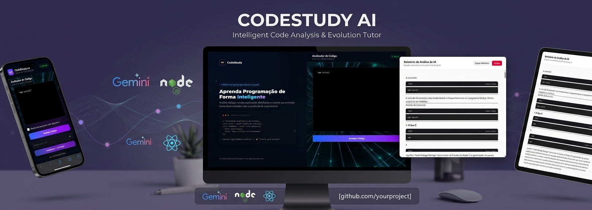
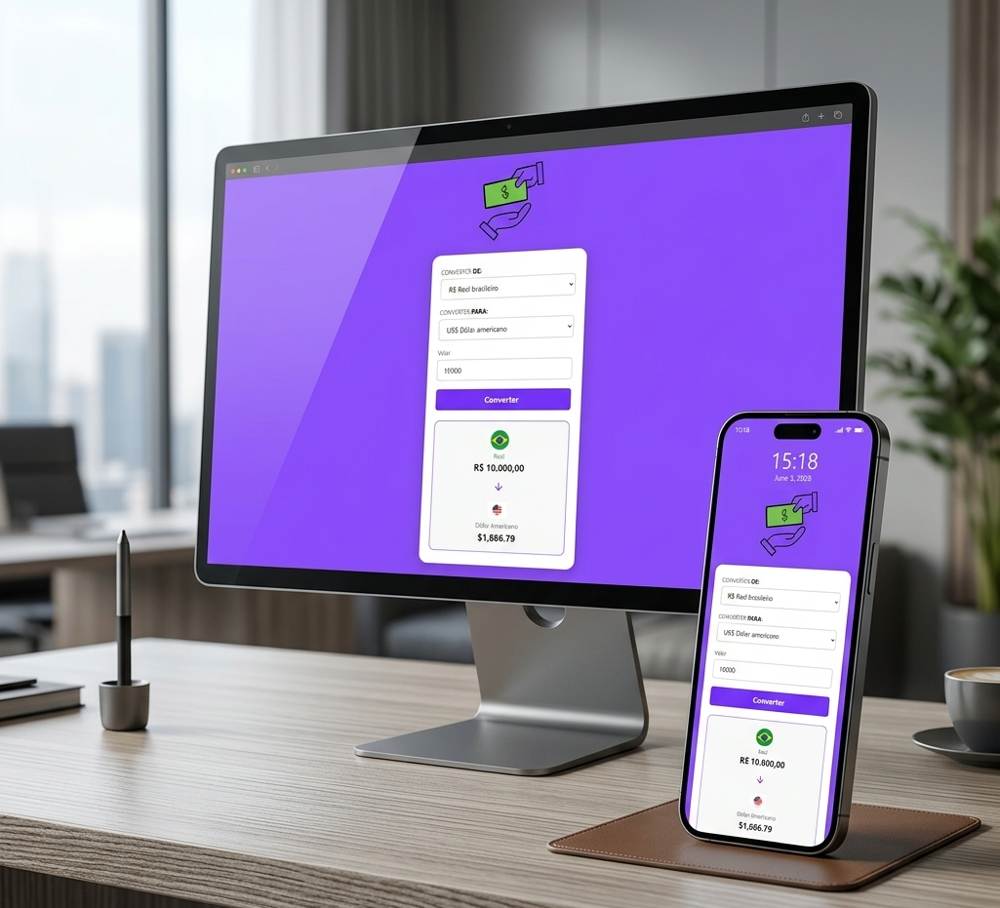
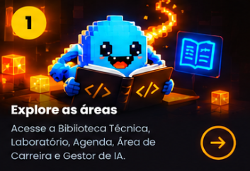
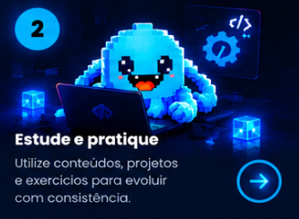
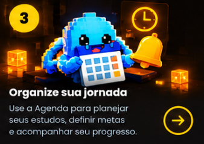
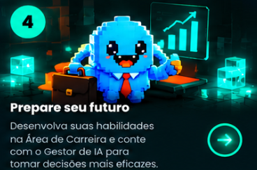
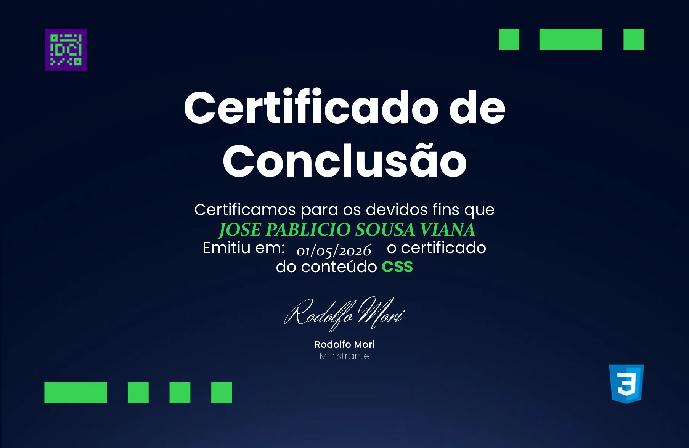
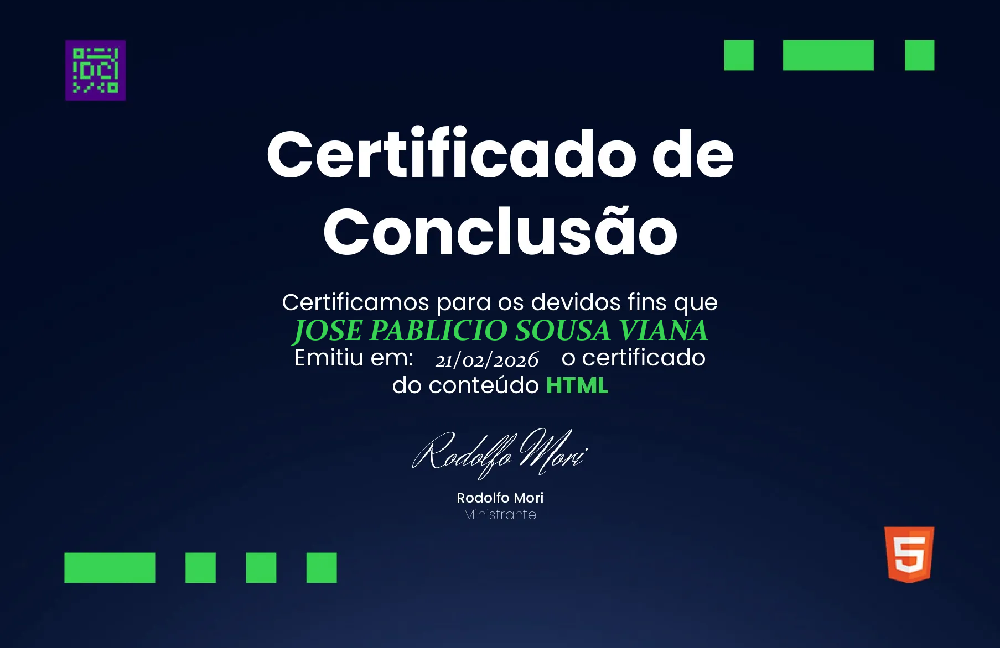

Formação
Análise e Desenvolvimento de Sistemas
DESENVOLVEDOR FULL STACK
Desenvolvedor focado em criar aplicações web modernas e SAAS centrados para a solução de empresas e usuários.

SOBRE MIM
Meu foco atual está na criação de projetos pessoais e no desenvolvimento de aplicações web modernas e soluções SaaS, buscando gerar resultados significativos para usuários e empresas. Também busco oportunidades para aplicar meus conhecimentos como desenvolvedor Full-Stack, contribuindo para projetos reais e para o crescimento de organizações que valorizam a tecnologia e a inovação.
Utilizo Inteligência Artificial estrategicamente para engenharia ágil, planejamento de projetos, arquitetura de software, análise de código, depuração e documentação técnica, mantendo total compreensão e responsabilidade por cada decisão técnica.
Estou sempre em busca de novos desafios e oportunidades para crescer como engenheiro de software.

Análise e Desenvolvimento de Sistemas
Full-Stack e Engenharia de Software
Utilizo IA aplicada de forma estratégica ao desenvolvimento do software.
HABILIDADES
Conjunto de tecnologias utilizadas para construir as aplicações escaláveis, seguras e de alta performance.
const desenvolvedor = {
foco: 'soluções de impacto',
aprendizado: 'contínuo',
mentalidade: 'sempre evoluir'
};MINHA JORNADA
Minha trajetória profissional começou na área de estoque, onde tive meus primeiros contatos com processos operacionais e organização de informações. Com o tempo, minha dedicação, organização e eficiência me levaram à oportunidade de atuar como assistente administrativo.
Foi nessa etapa que comecei a enxergar a tecnologia de outra forma. Identifiquei a necessidade de otimizar um processo de cálculo de valores dos produtos e desenvolvi, utilizando Excel, uma estratégia baseada em média ponderada que relacionava o estoque existente às novas compras. A solução tornou o processo mais ágil e despertou meu interesse por lógica, automação e desenvolvimento de software.
Essa experiência foi o ponto de partida para uma decisão importante: interrompi minha graduação em Administração para iniciar minha transição de carreira para a tecnologia.
Hoje, concilio minha atuação profissional na área de processos administrativos com os estudos e o desenvolvimento de projetos próprios. Cada aplicação que construo representa uma oportunidade de colocar meus conhecimentos em prática, enfrentar novos desafios e evoluir como desenvolvedor.
Minha experiência me ensinou que, antes de desenvolver uma solução, é preciso compreender o problema que ela pretende resolver. É essa visão que levo para minha jornada na Engenharia de Software.
Minha trajetória profissional começou na área de estoque, onde desenvolvi conhecimentos sobre organização, controle de mercadorias e processos operacionais. Meu desempenho, organização e eficiência contribuíram para minha evolução à função de assistente administrativo, ampliando minhas responsabilidades e minha participação nas atividades administrativas da empresa.
Durante minha atuação administrativa, identifiquei uma oportunidade de melhorar o cálculo dos valores dos produtos recebidos. Desenvolvi uma estratégia utilizando Excel e média ponderada, relacionando os valores e as quantidades do estoque existente com os das novas compras.
Essa solução ajudou a tornar o processo mais ágil e despertou meu interesse por lógica, automação e tecnologia. Foi a partir dessa experiência que comecei a considerar o desenvolvimento de software como uma nova direção profissional.
Atualmente, atuo na análise de processos administrativos, avaliação documental, elaboração de despachos e acompanhamento de demandas. Essa experiência fortalece minha capacidade analítica, organização e compreensão de fluxos de trabalho.
Paralelamente às responsabilidades profissionais, mantenho uma rotina de estudos e desenvolvimento de projetos, conciliando trabalho e preparação para minha primeira oportunidade na área de tecnologia.
Após iniciar minha trajetória acadêmica em Administração, decidi interromper essa graduação para direcionar minha carreira à tecnologia.
Passei a estudar desenvolvimento de software, aprofundando meus conhecimentos em lógica de programação, desenvolvimento web, estruturação de sistemas e boas práticas de programação.
Essa decisão representa minha transição de carreira e o compromisso de transformar meu interesse por tecnologia em uma profissão.
Atualmente, desenvolvo projetos pessoais para aplicar meus conhecimentos em HTML, CSS, JavaScript, React, Node.js e outras tecnologias relacionadas ao desenvolvimento web.
Entre meus projetos estão o CodeStudy AI e o TaskFlow, aplicações que surgiram de necessidades identificadas durante meu processo de aprendizagem.
Também utilizo Inteligência Artificial estrategicamente para apoiar planejamento, arquitetura, análise de código, depuração, testes e documentação técnica, mantendo a compreensão das decisões de desenvolvimento.
PROJETOS
Da organização dos estudos à análise de código com IA: explore aplicações que desenvolvi para resolver problemas reais.

Ambiente para estudantes de programação: reúne editor com prévia, biblioteca e organização dos estudos no navegador.
10 estrelas

Organiza o estudo de trechos de código e integra o Gemini para explicar sua lógica e fluxo de execução.
6 estrelas

Interface React para análise de código com Gemini, apoiada por uma API Node.js e banco SQLite.
8 estrelas

Converte valores entre seis moedas, com formatação local e cotações fixas de referência.
2 estrelas
Página responsiva inspirada no Banco Inter, com apresentação de produtos e navegação entre seções.
4 estrelas
Avaliações pessoais dos projetos, definidas pelo autor.
PROJETO DESTAQUE
Um ambiente para estudantes de programação que reúne editor, prévia de código, biblioteca técnica e organização da rotina. Desenvolvido para praticar, estudar e acompanhar atividades em um só lugar.




CERTIFICADOS E FORMAÇÃO
Formação em tecnologia e aprendizado contínuo para desenvolver soluções digitais.


VAMOS CONVERSAR?
Estou sempre aberto a novos desafios, oportunidades e conversas sobre tecnologia.
Vamos conversar no WhatsAppTecnologia conectando pessoas.